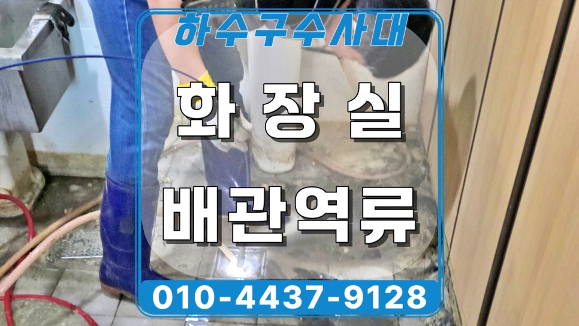
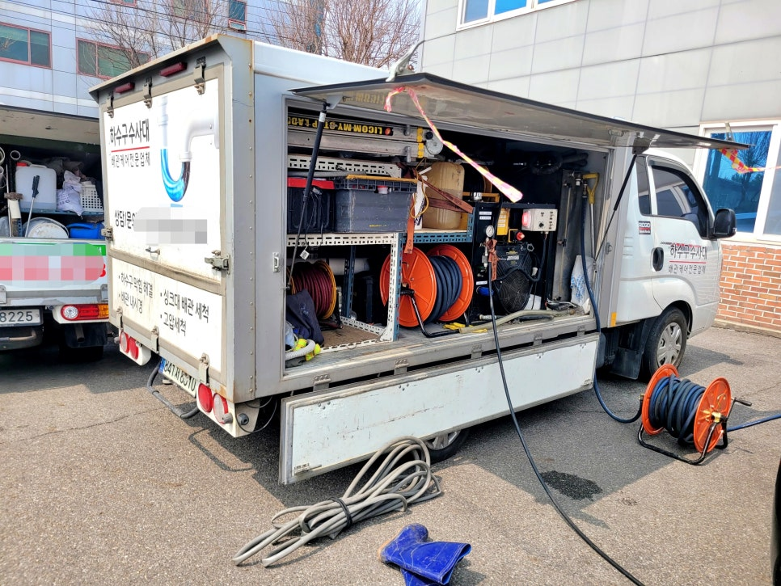
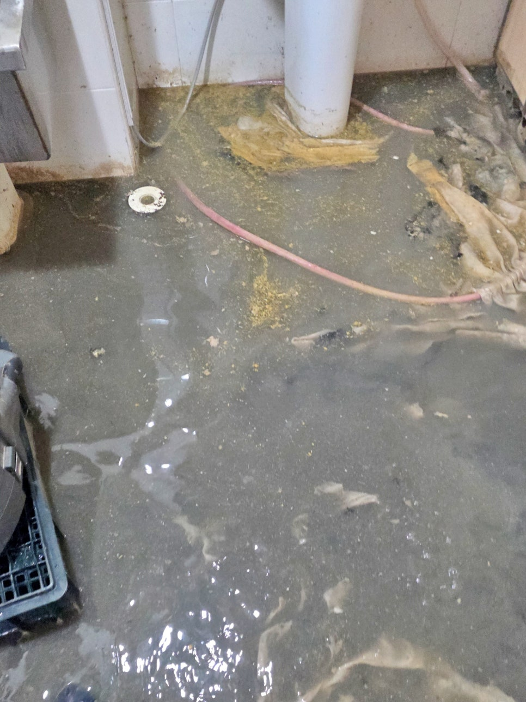
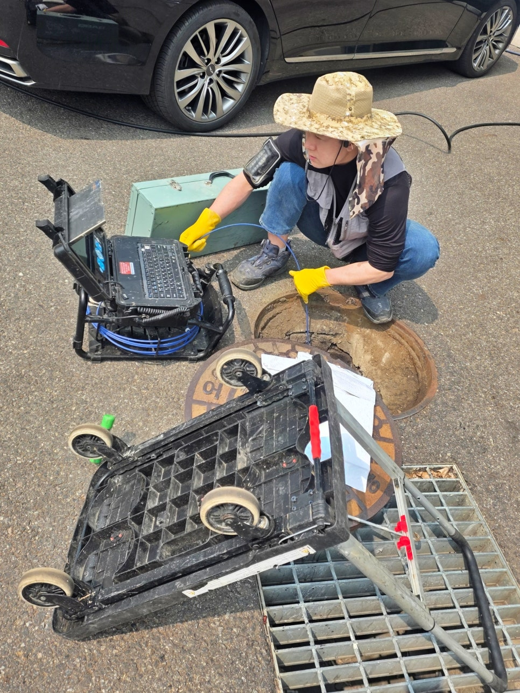
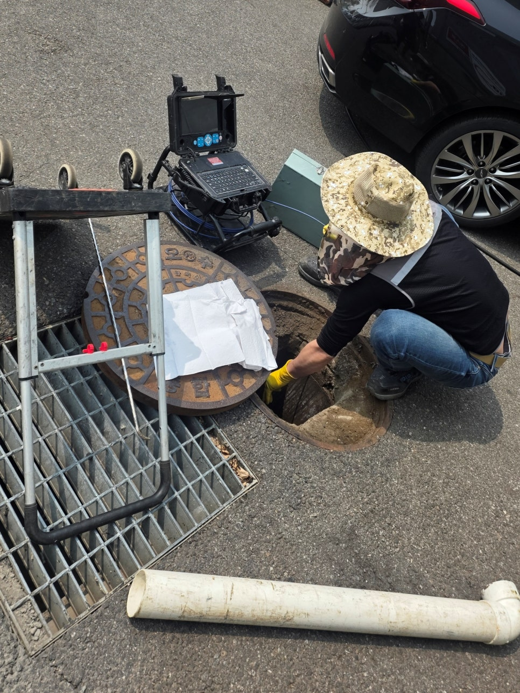
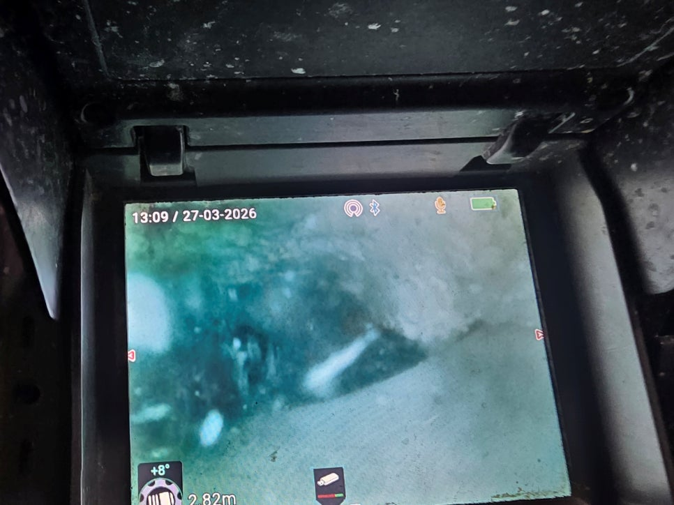
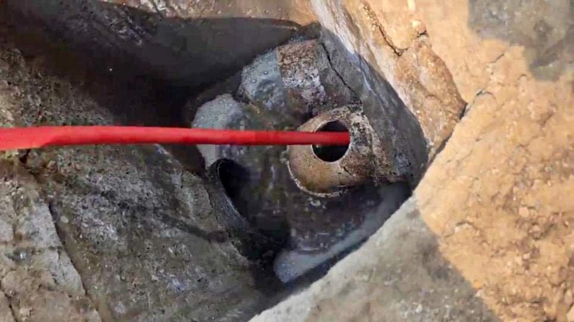

🏠 화성 발안 화장실 배수구막힘, 오수맨홀 고압세척 청소
화성 발안 하수구막힘 전문 시공 후기

📋 작업 개요
- 위치: 화성 발안, 발안, 화성
- 서비스 유형: 하수구막힘, 배관막힘, 맨홀막힘, 역류해결, 뚫는업체, 배관청소, 고압세척
- 작업 일시: 2026. 4. 23. 12:03
- 업체명: 하수구수사대 (010-5615-2118)
🔍 문제 상황
화성 발안 화장실 배수구막힘 역류,
오수맨홀 고압세척 청소로 배관 속
기름 제거함
환영합니다.
화성 발안 화장실 하수구막힘 역류
배관청소업체 하수구수사대입니다.
오늘은 화성 발안 화장실 배수구막힘과
고압세척 작업이 필요했던
회사 건물 현장을 소개해 드리는데요.
이번 현장은 3층 식당에서 내려온
기름 성분이 배관 안쪽에 굳어
1층 화장실에서 역류가 발생한
사례였습니다.
화성 발안 화장실 배수구막힘 현장
화성 발안 배수구막힘 현장에 가보니
1층 화장실 바닥에 오수가 넓게 퍼져
배수 기능이 거의 멈춘 상태였는데요.
화성 발안 화장실 고압세척 현장 개요
1. 위치 : 화성 발안 회사 화장실
2. 문제 : 1층 화장실 바닥 배수구막힘 역류
3. 원인 : 3층 식당에서 유입된 기름으로 오수맨홀로 나가는 구간이 막힘
4. 조치 : 내시경 카메라 점검, 고압세척 배관청소
오수맨홀 내시경 카메라 점검 과정

🔎 원인 분석
💡 전문가 진단: 화성 발안 화장실 배수구막힘 역류,오수맨홀 고압세척 청소로 배관 속기름 제거함
단순한 일시적 막힘보다 배관 내부에
기름 퇴적이 깊게 쌓였을 가능성이
높게 보이는 현장이었습니다.
하수구 역류 원인을 정확히 알기 위해
회사 주차장 오수맨홀부터 열어
관로 상태를 함께 살펴봤는데요.
이 점검 과정이 빠지면 원인 위치를
잘못 짚을 가능성이 크기 때문입니다.
하수구 내부에 쌓인 기름들
내시경 카메라 장비를 투입해 보니
배관 안쪽으로 기름 찌꺼기가
두껍게 달라붙어 통수 구간을
좁히고 있었는데요.
화면상으로도 오염층이 뚜렷해
고압세척이 필요한 상태였습니다.
고압세척 양방향 작업 과정
이번 화성 발안 화장실 배수구막힘
현장은 한쪽 방향에서만 뚫어서는
굳은 기름이 충분히 떨어지지 않을 수
있어 오수맨홀 구간과 실내 구간을
함께 활용한 양방향 고압세척으로
진행했습니다.
오수맨홀에서 1차 고압세척 진행 중
세척을 시작하자 배관 안에 붙어 있던

🔧 작업 과정
기름 덩어리와 오염물이 역류하며
대량으로 쏟아져 나왔는데요.
그만큼 내부 적체가 오래 이어졌다는
뜻이어서 작업 강도를 안정적으로
조절하며 계속 진행했습니다.
화장실 하수구역류 2차 고압세척 진행 중
건물 내부 쪽에서도 장비를 넣어
막힘 구간을 반복 세척했고,
맨홀 쪽에서도 물길을 열어 주면서
관 내부 벽면에 붙은 찌꺼기까지
떼어내는 데 집중했는데요.
그리고 화성 발안 고압세척 작업
중간마다 내시경으로 다시 살펴보니
배관 안쪽 원형이 점차 살아났고
막혀 있던 구간이 한층 또렷하게
드러나기 시작했습니다.
이런 재점검이 있어야 작업이
겉만 끝난 채 마무리되지 않습니다.
고압세척 청소로 깨끗해진 내부
세척을 충분히 마친 뒤에는
배수가 자연스럽게 이어지는지
물 사용 테스트까지 진행했는데요.
역류 없이 흐름이 살아나
1층 화장실 문제를 안정적으로
해결할 수 있었습니다.
오늘의 배관청소 후기를 마치며
화성 발안 화장실 내부 청소 진행 중
마지막으로 화장실 바닥에 남은
오수와 기름 찌꺼기도
그대로 두지 않고 주변 물청소까지
깔끔하게 진행했습니다.
이런 마감이 빠지면 현장 만족도가
떨어질 수밖에 없기 때문인데요.
이번 화성 발안 화장실 배수구막힘은
3층 식당에서 내려온 기름이
배관 안에서 굳으며 생긴 문제였으며
회사 주차장 오수맨홀 점검과


✅ 작업 완료
양방향 고압세척으로 원인을 풀어낸
현장이었습니다.
배수 속도가 느리거나
역류 조짐이 보인다면 주저마시고
하수구수사대를 불러 주십시오.
이상으로 오늘의
'화성 발안 화장실 배수구막힘'
고압세척 후기를 마치겠습니다.
감사합니다.
#화성발안화장실배수구막힘 #화성발안고압세척 #발안화장실역류 #발안배관막힘 #화성하수구막힘 #화성오수맨홀점검 #하수구내시경점검업체 #화성고압세척업체 #식당기름배관막힘




⚠️ 하수구 배관 막힘 예방 및 관리 가이드
- ✅ 머리카락, 비닐, 물티슈 등 물에 분해되지 않는 이물질은 하수구 유입을 절대 금지해 주세요.
- ✅ 하수구 거름망을 씌우고 모여진 이물질은 주기적으로 쓰레기통에 바로 비워주셔야 합니다.
- ✅ 배관 노후가 심할 경우 이물질이 더 쉽게 걸리므로 주기적인 배관 세척(고압세척 등)을 권장합니다.
- ✅ 작업 후 1년 이내 재발 시 하수구수사대에서 무상 A/S 보증 서비스를 제공합니다.
💡 핵심 정리
- 확실한 장비 작업(내시경 점검 및 샤프트 스케일링)으로 원인을 뿌리 뽑습니다.
- 작업 후 1년 이내에 동일한 부위 재발 시 100% 무상 A/S 서비스를 보장합니다.
- 서울 · 경기 · 인천 전 지역에 24시간 언제든 긴급 출동할 수 있도록 항시 대기 중입니다.
❓ 자주 묻는 질문 (FAQ)
🚨 화성 발안 하수구막힘 문제로 고민이신가요?
정확한 원인 진단과 확실한 시공으로 재발 없는 해결을 약속드립니다.
24시간 긴급 출동 | 서울 · 경기 · 인천 전지역 | 1년 내 재발 시 무상 A/S